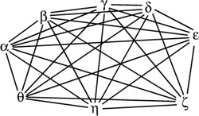
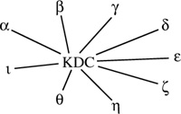
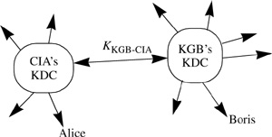
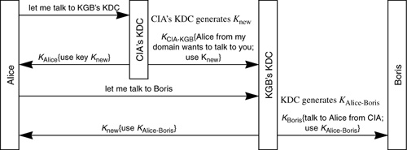
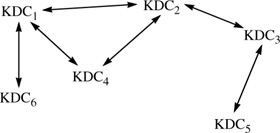
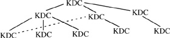

Networking Security Networking Security Networking Security Security Networking Security Networking Security Networking Charlie Kaufman Radia Perlman Mike Speciner Prentice Hall Network Security: Private Communication in a Public World, Second Edition
9.7. Trusted Intermediaries
Assume that network security is based on secret key technology. If the network is fairly large, say n nodes, and each computer might need to authenticate each other computer, then each computer would need to know nÂ1 keys, one for each other system on the network. If a new node were added to the network, then n keys would need to be generated, enough for that new node to have a shared secret with each of the other nodes. Somehow the keys would have to be securely distributed to all the other nodes in the network. This is clearly unworkable in any but very small networks.

9.7.1. KDCs
One way to make things manageable is to use a trusted node known as a Key Distribution Center (KDC). The KDC knows keys for all the nodes. If a new node is installed in the network, only that new node and the KDC need to be configured with a key for that node. If node α wants to talk to node β, α talks to the KDC (securely, since α and the KDC share a key), and asks for a key with which to talk to β. The KDC authenticates α, chooses a random number Rαβ to be used as a key to be shared by α and β for their conversation, encrypts Rαβ with the key the KDC shares with α and gives that to α. The KDC also encrypts Rαβ with the key the KDC shares with β and gives that to β, with the instruction that it is to be used for conversing with α. (Usually, the KDC will not bother to actually transmit the encrypted Rαβ to β but rather will give it to α to forward to β.) The encrypted message to β that the KDC gives to α to forward is often referred to as a ticket. Besides containing Rαβ, the ticket generally contains other information such as an expiration time and α's name. We'll discuss protocols involving KDCs in §11.4 Mediated Authentication (with KDC).

KDCs make key distribution much more convenient. When a new user is being installed into the network, or when a user's key is suspected of having been compromised, there's a single location (the KDC) that needs to be configured. The alternative to using a KDC is installing the user's information at every server to which the user might need access. There are some disadvantages to KDCs, though:
The KDC has enough information to impersonate anyone to anyone. If it is compromised, all the network resources are vulnerable. The KDC is a single point of failure. If it goes down, nobody can use anything on the network (or rather, nobody can start using something on the networkÂkeys previously distributed can continue to be used). It is possible to have multiple KDCs which share the same database of keys, but that means added complexity and cost for extra machines and replication protocols, and added vulnerability, since there are now more targets that need to be protected. The KDC might be a performance bottleneck, since everyone will need to frequently communicate with it. Having multiple KDCs can alleviate this problem.
9.7.2. Certification Authorities (CAs)
Key distribution is easier with public key cryptography. Each node is responsible for knowing its own private key, and all the public keys can be accessible in one place. But there are problems with public keys as well. If, for instance, all the public keys are published in The New York Times, or stored in the directory service, how can you be sure that the information is correct? An intruder, Trudy, might have overwritten the information in the directory service or taken out her own ad in The New York Times. If Trudy can trick you into mistaking her public key for Alice's, she can impersonate Alice to you.
The typical solution for this is to have a trusted node known as a Certification Authority (CA) that generates certificates, which are signed messages specifying a name (Alice) and the corresponding public key. All nodes will need to be preconfigured with the CA's public key so that they can verify its signature on certificates, but that is the only public key they'll need to know a priori. Certificates can be stored in any convenient location, such as the directory service, or each node can store its own certificate and furnish it as part of the authentication exchange. CAs are the public key equivalent of KDCs. A CA or a KDC is the single trusted entity whose compromise can destroy the integrity of the entire network. The advantages of CAs over KDCs are:
The CA does not need to be on-line. It might be in a locked room protected by a scary-looking guard. Perhaps only a single very trusted individual has access to the CA. That person types the relevant information at the CA, and the CA writes a floppy disk with the new user's certificate, and the floppy disk can be hand-carried to a machine that's on the network. If the CA is not on-line it cannot be probed by curious intruders. Since the CA does not have to be on-line or perform network protocols, it can be a vastly simpler device, and therefore it might be more secure. If the CA were to crash, the network would not be disabled (as would be the case with a KDC). The only operation that would be impacted is installing new users (until things start expiring, such as certificates or Certificate Revocation ListsÂsee §9.7.3 Certificate Revocation). So it's not as essential to have multiple CAs. Certificates are not security-sensitive. If they are stored in a convenient, but potentially insecure, location like the directory service, a saboteur might delete certificates, which might prevent network access by the owners of those certificates, but the saboteur cannot write bogus certificates or modify certificates in any way, since only the CA can generate signatures. A compromised CA cannot decrypt conversations, whereas a compromised KDC that sees a conversation between any two parties it serves can decrypt the conversation. A compromised CA can fool Alice into accepting an incorrect public key for Bob, and then the CA can impersonate Bob to Alice, but it will not be able to decrypt a conversation between the real Alice and the real Bob. (It's still really bad for a CA to be compromised, but we're just saying it's not quite as bad as compromise of a KDC.)
Why do you security people always speak of compromise as if it's a bad thing? Good engineering is all about compromise.
Âoverheard at a project review
9.7.3. Certificate Revocation
There is a potential disadvantage with CAs. Suppose Fred is given a certificate with an expiration time a year in the future, and then Fred is fired. Since Fred is now a disgruntled ex-employee, it would be nice to alert the network not to allow him access. With KDCs it's easyÂmerely delete his key from the KDC. With CAs, though, it's not as straightforward to deny access to someone once he is given a certificate. It is common practice to put an expiration date in a certificate. The certificate becomes invalid after that date. The typical validity interval is about a year. A disgruntled ex-employee can do a lot of damage in a year, even without a machine gun. But you wouldn't want validity intervals much smaller than that, because renewing certificates is a nuisance.
The solution is similar to what was done for credit cards. When the bank issues a credit card, it prints an expiration date, perhaps a year in the future. But sometimes a card is reported stolen, or the bank might for some other reason like to revoke it. The credit card company publishes a book of credit card numbers that stores should refuse to honor. These days, most stores are hooked to computer networks where they check the validity of the card, but in ancient times merchants needed to rely on the book of bad credit card numbers, which was presumably published frequently.
X.509 [ISO97] has a defined format for a certificate, as well as of a Certificate Revocation List (CRL). We document the formats in §15.6 PKIX and X.509. A CRL lists serial numbers of certificates that should not be honored. A new CRL is posted periodically, and lists all revoked and unexpired certificates. A certificate is valid if it has a valid CA signature, has not expired, and is not listed in the CA's most recent CRL. The CRL has an issue time. If an application wants to ensure that none of the certificates it honors has been revoked in the last hour, say, then the application will need to see a CRL issued within the last hour before it will honor any certificates. This means, in this case, that a new CRL must be posted at least once an hour. An intruder might delete the latest CRL, in which case applications that want to see a CRL posted within the last hour will refuse to honor any certificates, but the intruder cannot impersonate a valid user by destroying the CRL or overwriting it with a CRL issued longer ago than the application's tolerance.
A certificate includes the user's name, the user's public key, an expiration time, a serial number, and the issuing CA's signature on the entire contents of the certificate. An X.509 CRL includes a list of serial numbers of unexpired revoked certificates and an issue time for the CRL.
Suppose Bob is an application that needs to authenticate the user Alice. Bob needs Alice's certificate and a recent CRL. Bob can obtain them from the directory service, or perhaps Alice transmits them to Bob. Armed with the certificate and CRL, Bob decides what public key is associated with the name Alice. If the certificate is validly signed by the CA and has not expired, and the CRL is validly signed by the CA and is sufficiently recent and does not list Alice's certificate, then Bob will assume that Alice's public key is as stated in the certificate. Then Bob will go through an authentication handshake whereby Alice proves she knows the private key that corresponds to the public key listed in her certificate. Revocation schemes are discussed in more detail in §15.4 Revocation.
9.7.4. Multiple Trusted Intermediaries
A problem with both KDCs and CAs as described so far is that they require that there be a single administration trusted by all principals in the system. Anyone who compromises the KDC or the CA can impersonate anyone to anyone. As you try to scale authentication schemes up to international or intercorporate scale, you discover that there is no one who everyone trusts (and if there were, they would be too busy with more important tasks to operate and manage a KDC or CA).
The solution is to break the world into domains. Each domain has one trusted administration (one logical KDC or one CAÂthere might be replicas for availability, but they are all are functionally equivalent). If Alice and Boris are in the same domain, they authenticate as described above. If they are in different domains, then authentication is still possible, but a little more complicated.
9.7.4.1. Multiple KDC Domains

How does key distribution work with multiple KDC domains? Let's say Alice is in the CIA and Boris is in the KGB. The CIA will manage a KDC, and the CIA's KDC will know Alice's key. Boris's key is known to the KGB's KDC. Given that the two organizations want to be able to exchange secure electronic mail (perhaps so they can express outrage that the other organization is engaged in, gasp, spying), they can make this possible by having a key that the two KDCs share. So the CIA's KDC, in addition to having keys for all its users, will also have configured a key which it shares with the KGB's KDC. Let's call that shared key KKGB-CIA.
KKGB-CIA is used when a user in the CIA wants to have a secure communication with a user in the KGB. Alice, knowing Boris is in the KGB, tells her KDC that she wants to talk to the KGB's KDC. Her KDC facilitates this the same way it would facilitate communication between two CIA users. It generates a new random key, Knew, and encrypts a message containing Knew using Alice's key. This message is to inform Alice of Knew. It separately encrypts a message containing Knew using the key KKGB-CIA. That message, which also contains Alice's name, will be sent to the KGB's KDC. The fact that the message is encrypted with KKGB-CIA lets the KGB's KDC know that Alice is from the CIA's domain. (Note that the KGB's KDC will probably have many KDCs with which it shares keys. For performance reasons, a cleartext clue that the message is coming from the CIA's KDC will have to be sent along with the encrypted message so that the KGB's KDC will know to try the key KKGB-CIA.) After verifying that the message is encrypted with KKGB-CIA, the KGB's KDC will generate a key KAlice-Boris and send that to Alice, encrypted with Knew. It will also generate a message for Boris (which it gives to Alice to deliver) that will be encrypted with Boris's key. The message will contain KAlice-Boris and the information that Alice is from the CIA domain.

There would likely be thousands of domains in an international/intercorporate/interdenominational internetwork. The conceptually simplest method of allowing users from one domain to talk to users in another domain securely is to have every pair of KDCs configured with a shared key. So the CIA KDC would have a shared key, not only with the KGB's KDC, but with Greenpeace's KDC, and MIT's KDC, and IBM's KDC. Perhaps someone (either in Greenpeace or the CIA) might decide that there was no reason for traffic between the two domains, in which case those KDCs would not need to share a key. But most likely there would be so many domains that it would be unworkable to have every pair of domains configured with a shared key. So there would likely be either a tree of KDCs, or some perhaps less structured logical interconnection of KDCs.

Users can securely authenticate even if their KDCs are not directly linked, if a chain of KDCs can be found. It isn't obvious how one would find an appropriate chain of KDCs. For instance, as we will discuss in the Kerberos chapters, Kerberos V4 does not allow chains of KDCs; to have interdomain communication between two KDCs, they have to have a shared key. Kerberos V5 allows arbitrary connectivity, but assumes there is a default hierarchy, with perhaps additional links (shared keys) between pairs of KDCs that are not directly connected in the default hierarchy.

After Alice has negotiated a chain of KDCs to get to Boris's KDC, the encrypted message Boris receives should list the chain of KDCs that helped establish the path. The reason for this is that Boris might trust some chains more than others. For instance, the KGB's KDC might have a shared key with MIT's KDC. That KDC, if overtaken by playful undergraduates, could send a message to the KGB's KDC that Alice, from the CIA, wants to talk to the KGB's KDC, through the path CIAÂMIT. It is likely that the KGB's KDC would not trust anything more than one hop through MIT; that is, it will believe MIT's KDC when it tells it there are users from MIT who wish to communicate, but it won't believe it if MIT claims a different organization is attempting communication with the KGB through MIT's KDC.
9.7.4.2. Multiple CA Domains
The situation is similar with CAs. Each CA services a set of users, and issues certificates for those users. This is functionally similar to a KDC having a shared key with a user. The users of a particular CA can verify each other's certificates, since all users of a particular CA know its public key.
How can Alice be sure she knows Boris's public key if Alice's CA is different from Boris's CA? This is accomplished by having the two CAs issue certificates for each other. Alice obtains a certificate, signed by her own CA, stating the public key of Boris's CA. Then, using that certificate plus Boris's certificate (which has been signed by Boris's CA), she can verify Boris's public key.
Alice obtains Boris's CA's certificate stating that its public key is P1, signed by her own CA. Alice obtains Boris's certificate stating that his public key is P2, signed with key P1.
Because she has both of those certificates, she now can verify Boris's public key.
As with chains of KDCs, it is possible that some CAs will not have certificates for each other, but there will be a chain of CAs which works. In Chapter 15 PKI (Public Key Infrastructure), we discuss various strategies for finding appropriate chains of certificates. It is really no different from the problem of navigating through logically interconnected KDCs, and there is really no universally accepted wonderful answer, though there are several workable schemes.
|